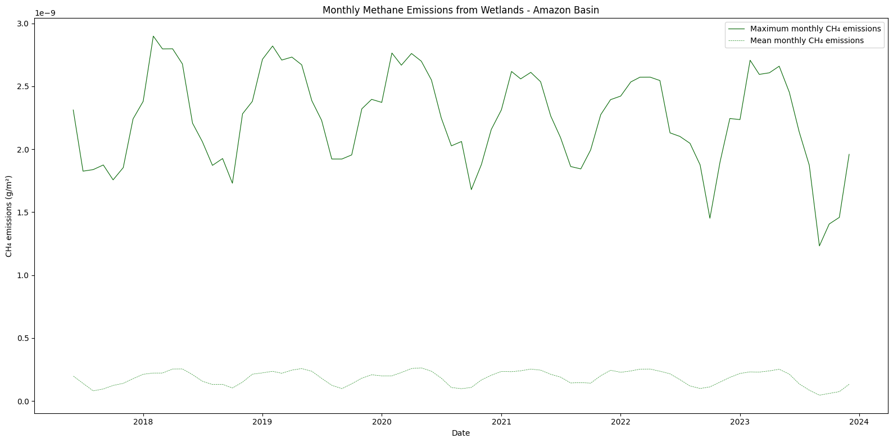

import requests
import folium
import folium.plugins
from folium import Map, TileLayer
from pystac_client import Client
import branca
import pandas as pd
import matplotlib.pyplot as pltWetland Methane Emissions, LPJ-EOSIM Model
Global, daily 0.5 degree resolution methane emission estimates from wetlands, LPJ-EOSIM Model
Overview
- Query the GRSS VEDA STAC API to discover available dates and temporal frequency for the Wetland Methane Emissions collection.
- Generate map tiles using the raster API endpoint.
- Compare methane emissions across different time periods using side-by-side visualization with
folium.plugins.DualMap. - Compute zonal statistics for a specified region of interest.
Background
Wetland ecosystems represent the dominant natural source of atmospheric methane (CH₄), accounting for approximately one-third of total global emissions from both natural and human-caused sources. The production of methane in wetlands occurs through microbial decomposition of organic matter in waterlogged, oxygen-depleted soils.
The LPJ-EOSIM (Lund-Potsdam-Jena Earth Observation SIMulator) model provides global estimates of wetland methane emissions at 0.5° × 0.5° spatial resolution. The model simulates wetland extent and incorporates key environmental parameters including soil moisture, temperature, and carbon content to estimate CH₄ flux rates.
This dataset reveals concentrated methane sources in tropical regions and high-latitude ecosystems. The model outputs are used with NASA’s GEOS atmospheric model to understand how wetland emissions influence global methane concentrations.
Required Libraries
Install dependencies if running outside the hub environment:
%pip install requests folium rasterstats pystac_client pandas matplotlib --quietConnect to the STAC API
Import required libraries and configure the API endpoints to access the GRSS VEDA STAC catalog.
# Configure API endpoints for the GRSS VEDA platform
STAC_API_URL = "https://api.dev.veda.grss.cloud/stac"
RASTER_API_URL = "https://api.dev.veda.grss.cloud/raster"
# Collection identifier for wetland methane emissions
collection_name = "LPJ_EOSIM_L2_MCH4E.001"
# Asset containing the ensemble mean CH4 emissions data
asset_name = "ensemble-mean-ch4-wetlands-emissions"# Retrieve collection metadata
collection = requests.get(f"{STAC_API_URL}/collections/{collection_name}").json()
collection{'id': 'LPJ_EOSIM_L2_MCH4E.001',
'type': 'Collection',
'links': [{'rel': 'items',
'type': 'application/geo+json',
'href': 'https://api.dev.veda.grss.cloud/stac/collections/LPJ_EOSIM_L2_MCH4E.001/items'},
{'rel': 'parent',
'type': 'application/json',
'href': 'https://api.dev.veda.grss.cloud/stac/'},
{'rel': 'root',
'type': 'application/json',
'href': 'https://api.dev.veda.grss.cloud/stac/'},
{'rel': 'self',
'type': 'application/json',
'href': 'https://api.dev.veda.grss.cloud/stac/collections/LPJ_EOSIM_L2_MCH4E.001'},
{'rel': 'http://www.opengis.net/def/rel/ogc/1.0/queryables',
'type': 'application/schema+json',
'title': 'Queryables',
'href': 'https://api.dev.veda.grss.cloud/stac/collections/LPJ_EOSIM_L2_MCH4E.001/queryables'}],
'title': '(Monthly) Wetland Methane Emissions, LPJ-EOSIM Model v2',
'assets': {},
'extent': {'spatial': {'bbox': [[-180, -90, 180, 90]]},
'temporal': {'interval': [['2017-06-01T00:00:00+00:00',
'2023-12-31T00:00:00+00:00']]}},
'license': 'CC0-1.0',
'renders': {'dashboard': {'assets': ['ensemble-mean-ch4-wetlands-emissions'],
'rescale': [[0, 3e-09]],
'colormap_name': 'magma'},
'era5-ch4-wetlands-emissions': {'assets': ['era5-ch4-wetlands-emissions'],
'rescale': [[0, 3e-09]],
'colormap_name': 'magma'},
'merra2-ch4-wetlands-emissions': {'assets': ['merra2-ch4-wetlands-emissions'],
'rescale': [[0, 3e-09]],
'colormap_name': 'magma'},
'ensemble-mean-ch4-wetlands-emissions': {'assets': ['ensemble-mean-ch4-wetlands-emissions'],
'rescale': [[0, 3e-09]],
'colormap_name': 'magma'}},
'providers': [{'name': 'NASA'}],
'summaries': {'datetime': ['2017-06-01T00:00:00Z', '2023-12-01T00:00:00Z']},
'description': 'Global, monthly estimates of methane (CH₄) emissions from terrestrial wetlands at 0.5 x 0.5 degree spatial resolution using the Earth Observation SIMulator version (LPJ-EOSIM) of the Lund-Potsdam-Jena Dynamic Global Vegetation Model (LPJ-DGVM). Methane emissions from vegetated wetlands are estimated to be the largest natural source of methane in the global CH₄ budget, contributing to roughly one third of the total of natural and anthropogenic emissions. Wetland CH₄ is produced by microbes breaking down organic matter in the oxygen deprived environment of inundated soils. Due to limited data availability, the details of the role of wetland CH₄ emissions have thus far been underrepresented. The LPJ-EOSIM model estimates wetland methane emissions by simulating wetland extent and using characteristics of these inundated areas such as soil moisture, temperature, and carbon content to estimate CH₄ quantities emitted into the atmosphere. Input climate forcing data comes from Modern-Era Retrospective analysis for Research and Applications Version 2 (MERRA-2) data and ECMWF Re-Analysis data (ERA5). An ensemble layer provides the result of the mean of the MERRA-2 and ERA5 layers. The source data can be found at https://doi.org/10.5067/Community/LPJ-EOSIM/LPJ_EOSIM_L2_MCH4E.001 and https://doi.org/10.5067/Community/LPJ-EOSIM/LPJ_EOSIM_L2_MCH4E_LL.001.',
'item_assets': {'cog_default': {'type': 'image/tiff; application=geotiff; profile=cloud-optimized',
'roles': ['data', 'layer'],
'title': 'Default COG Layer',
'description': 'Cloud optimized default layer to display on map'}},
'stac_version': '1.0.0',
'stac_extensions': ['https://stac-extensions.github.io/render/v1.0.0/schema.json',
'https://stac-extensions.github.io/item-assets/v1.0.0/schema.json'],
'dashboard:is_periodic': True,
'dashboard:time_density': 'month'}The collection metadata shows temporal coverage from 1990 to present with daily observations, as indicated by dashboard:time_density.
def count_collection_items(collection_id):
"""Count total items in a STAC collection using pagination."""
count = 0
items_url = f"{STAC_API_URL}/collections/{collection_id}/items"
while True:
response = requests.get(items_url)
if not response.ok:
print("Error retrieving items")
break
stac = response.json()
count += int(stac.get("numberReturned", 0))
next_link = [link for link in stac["links"] if link["rel"] == "next"]
if not next_link:
break
items_url = next_link[0]["href"]
return count# Fetch available items from the collection
total_count = count_collection_items(collection_name)
items = requests.get(f"{STAC_API_URL}/collections/{collection_name}/items?limit=600").json()["features"]
print(f"Retrieved {len(items)} items from collection")Retrieved 79 items from collection# Inspect the structure of an individual item
items[0]{'id': 'LPJ_EOSIM_L2_MCH4E.001-202312',
'bbox': [-180.0, -90.0, 180.0, 90.0],
'type': 'Feature',
'links': [{'rel': 'collection',
'type': 'application/json',
'href': 'https://api.dev.veda.grss.cloud/stac/collections/LPJ_EOSIM_L2_MCH4E.001'},
{'rel': 'parent',
'type': 'application/json',
'href': 'https://api.dev.veda.grss.cloud/stac/collections/LPJ_EOSIM_L2_MCH4E.001'},
{'rel': 'root',
'type': 'application/json',
'href': 'https://api.dev.veda.grss.cloud/stac/'},
{'rel': 'self',
'type': 'application/geo+json',
'href': 'https://api.dev.veda.grss.cloud/stac/collections/LPJ_EOSIM_L2_MCH4E.001/items/LPJ_EOSIM_L2_MCH4E.001-202312'},
{'title': 'Map of Item',
'href': 'https://api.dev.veda.grss.cloud/raster/collections/LPJ_EOSIM_L2_MCH4E.001/items/LPJ_EOSIM_L2_MCH4E.001-202312/WebMercatorQuad/map?assets=ensemble-mean-ch4-wetlands-emissions&rescale=0%2C3e-09&colormap_name=magma',
'rel': 'preview',
'type': 'text/html'}],
'assets': {'era5-ch4-wetlands-emissions': {'href': 's3://ieee-grss-data-store/LPJ_EOSIM_L2_MCH4E.001/LPJ_EOSIM_L2_MCH4E_ERA5_001_202312.tif',
'type': 'image/tiff; application=geotiff',
'roles': ['data', 'layer'],
'title': '(Monthly) Wetland Methane Emissions, ERA5 LPJ-EOSIM Model v2',
'proj:bbox': [-180.0, -90.0, 180.0, 90.0],
'proj:epsg': 4326,
'proj:shape': [360, 720],
'description': 'Methane emissions from wetlands in units of grams of methane per meter squared per second. ECMWF Re-Analysis (ERA5) as input to LPJ-EOSIM model.',
'raster:bands': [{'scale': 1.0,
'nodata': -9999.0,
'offset': 0.0,
'sampling': 'area',
'data_type': 'float32',
'histogram': {'max': 3.2194256149864486e-09,
'min': 0.0,
'count': 11,
'buckets': [61519, 551, 176, 86, 47, 33, 22, 19, 6, 2]},
'statistics': {'mean': 2.1687599436592488e-11,
'stddev': 1.1635106754765193e-10,
'maximum': 3.2194256149864486e-09,
'minimum': 0.0,
'valid_percent': 24.097608024691358}}],
'proj:geometry': {'type': 'Polygon',
'coordinates': [[[-180.0, -90.0],
[180.0, -90.0],
[180.0, 90.0],
[-180.0, 90.0],
[-180.0, -90.0]]]},
'proj:transform': [0.5, 0.0, -180.0, 0.0, -0.5, 90.0, 0.0, 0.0, 1.0]},
'merra2-ch4-wetlands-emissions': {'href': 's3://ieee-grss-data-store/LPJ_EOSIM_L2_MCH4E.001/LPJ_EOSIM_L2_MCH4E_MERRA2_001_202312.tif',
'type': 'image/tiff; application=geotiff',
'roles': ['data', 'layer'],
'title': '(Monthly) Wetland Methane Emissions, MERRA-2 LPJ-EOSIM Model v2',
'proj:bbox': [-180.0, -90.0, 180.0, 90.0],
'proj:epsg': 4326,
'proj:shape': [360, 720],
'description': 'Methane emissions from wetlands in units of grams of methane per meter squared per second. Modern-Era Retrospective analysis for Research and Applications Version 2 (MERRA-2) data as input to LPJ-EOSIM model.',
'raster:bands': [{'scale': 1.0,
'nodata': -9999.0,
'offset': 0.0,
'sampling': 'area',
'data_type': 'float32',
'histogram': {'max': 3.598020326123219e-09,
'min': 0.0,
'count': 11,
'buckets': [61509, 531, 232, 102, 52, 14, 8, 7, 0, 1]},
'statistics': {'mean': 2.263860874804124e-11,
'stddev': 1.1585119186254324e-10,
'maximum': 3.598020326123219e-09,
'minimum': 0.0,
'valid_percent': 24.095679012345677}}],
'proj:geometry': {'type': 'Polygon',
'coordinates': [[[-180.0, -90.0],
[180.0, -90.0],
[180.0, 90.0],
[-180.0, 90.0],
[-180.0, -90.0]]]},
'proj:transform': [0.5, 0.0, -180.0, 0.0, -0.5, 90.0, 0.0, 0.0, 1.0]},
'ensemble-mean-ch4-wetlands-emissions': {'href': 's3://ieee-grss-data-store/LPJ_EOSIM_L2_MCH4E.001/LPJ_EOSIM_L2_MCH4E_ensemble_mean_001_202312.tif',
'type': 'image/tiff; application=geotiff',
'roles': ['data', 'layer'],
'title': '(Monthly) Wetland Methane Emissions, Ensemble Mean LPJ-EOSIM Model v2',
'proj:bbox': [-180.0, -90.0, 180.0, 90.0],
'proj:epsg': 4326,
'proj:shape': [360, 720],
'description': 'Methane emissions from wetlands in units of grams of methane per meter squared per second. Ensemble of multiple climate forcing data sources input to LPJ-EOSIM model.',
'raster:bands': [{'scale': 1.0,
'nodata': -9999.0,
'offset': 0.0,
'sampling': 'area',
'data_type': 'float32',
'histogram': {'max': 3.037322837684542e-09,
'min': 0.0,
'count': 11,
'buckets': [61377, 582, 255, 111, 60, 35, 19, 9, 7, 1]},
'statistics': {'mean': 2.2163971297311943e-11,
'stddev': 1.1311244931150401e-10,
'maximum': 3.037322837684542e-09,
'minimum': 0.0,
'valid_percent': 24.095679012345677}}],
'proj:geometry': {'type': 'Polygon',
'coordinates': [[[-180.0, -90.0],
[180.0, -90.0],
[180.0, 90.0],
[-180.0, 90.0],
[-180.0, -90.0]]]},
'proj:transform': [0.5, 0.0, -180.0, 0.0, -0.5, 90.0, 0.0, 0.0, 1.0]},
'rendered_preview': {'title': 'Rendered preview',
'href': 'https://api.dev.veda.grss.cloud/raster/collections/LPJ_EOSIM_L2_MCH4E.001/items/LPJ_EOSIM_L2_MCH4E.001-202312/preview.png?assets=ensemble-mean-ch4-wetlands-emissions&rescale=0%2C3e-09&colormap_name=magma',
'rel': 'preview',
'roles': ['overview'],
'type': 'image/png'}},
'geometry': {'type': 'Polygon',
'coordinates': [[[-180, -90],
[180, -90],
[180, 90],
[-180, 90],
[-180, -90]]]},
'collection': 'LPJ_EOSIM_L2_MCH4E.001',
'properties': {'end_datetime': '2023-12-31T00:00:00Z',
'start_datetime': '2023-12-01T00:00:00Z'},
'stac_version': '1.0.0',
'stac_extensions': ['https://stac-extensions.github.io/raster/v1.1.0/schema.json',
'https://stac-extensions.github.io/projection/v1.1.0/schema.json']}Set rescale values for visualization:
rescale_values = {'max': 0.0003, 'min': 0.0}Visualize Methane Emissions Over Time
Generate map tiles using the Raster API to compare emissions across different dates.
# Index items by date for easy lookup
items_by_date = {item["properties"]["start_datetime"][:10]: item for item in items}items_by_date['2023-07-01']['id']'LPJ_EOSIM_L2_MCH4E.001-202307'color_map = "magma"
# Fetch tiles for summer observation (July)
summer_date = '2023-07-01'
summer_tile = requests.get(
f"{RASTER_API_URL}/collections/{collection_name}/items/{items_by_date[summer_date]['id']}/WebMercatorQuad/tilejson.json?"
f"&assets={asset_name}"
f"&color_formula=gamma+r+1.05&colormap_name={color_map}"
f"&rescale={rescale_values['min']},{rescale_values['max']}"
).json()
summer_tile{'tilejson': '2.2.0',
'version': '1.0.0',
'scheme': 'xyz',
'tiles': ['https://api.dev.veda.grss.cloud/raster/collections/LPJ_EOSIM_L2_MCH4E.001/items/LPJ_EOSIM_L2_MCH4E.001-202307/tiles/WebMercatorQuad/{z}/{x}/{y}@1x?assets=ensemble-mean-ch4-wetlands-emissions&color_formula=gamma+r+1.05&colormap_name=magma&rescale=0.0%2C0.0003'],
'minzoom': 0,
'maxzoom': 24,
'bounds': [-180.0, -90.0, 180.0, 90.0],
'center': [0.0, 0.0, 0]}# Fetch tiles for winter observation (January)
winter_date = '2023-01-01'
winter_tile = requests.get(
f"{RASTER_API_URL}/collections/{items_by_date[winter_date]['collection']}/items/{items_by_date[winter_date]['id']}/WebMercatorQuad/tilejson.json?"
f"&assets={asset_name}"
f"&color_formula=gamma+r+1.05&colormap_name={color_map}"
f"&rescale={rescale_values['min']},{rescale_values['max']}"
).json()
winter_tile{'tilejson': '2.2.0',
'version': '1.0.0',
'scheme': 'xyz',
'tiles': ['https://api.dev.veda.grss.cloud/raster/collections/LPJ_EOSIM_L2_MCH4E.001/items/LPJ_EOSIM_L2_MCH4E.001-202301/tiles/WebMercatorQuad/{z}/{x}/{y}@1x?assets=ensemble-mean-ch4-wetlands-emissions&color_formula=gamma+r+1.05&colormap_name=magma&rescale=0.0%2C0.0003'],
'minzoom': 0,
'maxzoom': 24,
'bounds': [-180.0, -90.0, 180.0, 90.0],
'center': [0.0, 0.0, 0]}Side-by-Side Comparison: Summer vs Winter Emissions
# Compare summer and winter emissions over Southeast Asia
map_ = folium.plugins.DualMap(location=(15, 100), zoom_start=4)
summer_layer = TileLayer(
tiles=summer_tile["tiles"][0],
attr="GRSS VEDA",
opacity=0.6,
)
summer_layer.add_to(map_.m1)
winter_layer = TileLayer(
tiles=winter_tile["tiles"][0],
attr="GRSS VEDA",
opacity=0.6,
)
winter_layer.add_to(map_.m2)
map_Make this Notebook Trusted to load map: File -> Trust Notebook
Zonal Statistics Analysis
Define a region of interest to compute statistics over time. Here we analyze emissions across the Amazon basin.
# Define Amazon basin region
amazon_aoi = {
"type": "Feature",
"properties": {},
"geometry": {
"coordinates": [
[
[-70, -10],
[-70, 5],
[-50, 5],
[-50, -10],
[-70, -10]
]
],
"type": "Polygon",
},
}# Display the AOI on a map
aoi_map = Map(
tiles="OpenStreetMap",
location=[-2, -60],
zoom_start=4,
)
folium.GeoJson(amazon_aoi, name="Amazon Basin").add_to(aoi_map)
aoi_mapMake this Notebook Trusted to load map: File -> Trust Notebook
# Refresh items list
items = requests.get(
f"{STAC_API_URL}/collections/{collection_name}/items?limit=600"
).json()["features"]
print(f"Processing {len(items)} items")Processing 79 itemsdef compute_statistics(item, geojson):
"""Calculate zonal statistics for a single item over the given AOI."""
result = requests.post(
f"{RASTER_API_URL}/cog/statistics",
params={"url": item["assets"][asset_name]["href"]},
json=geojson,
).json()
return {
**result["properties"],
"datetime": item["properties"]["start_datetime"],
}%%time
# Compute statistics for all available items
stats = [compute_statistics(item, amazon_aoi) for item in items]CPU times: user 1.16 s, sys: 164 ms, total: 1.32 s
Wall time: 1min 5s# Preview statistics from first item
stats[0]{'statistics': {'b1': {'min': 0.0,
'max': 1.9596972933300094e-09,
'mean': 1.3262628495436246e-10,
'count': 1184.0,
'sum': 1.5702951827734069e-07,
'std': 2.2244537361546118e-10,
'median': 4.504550898953852e-11,
'majority': 0.0,
'minority': 3.515131938661571e-16,
'unique': 1175.0,
'histogram': [[946, 127, 48, 31, 16, 7, 4, 3, 0, 2],
[0.0,
1.9596972655744338e-10,
3.9193945311488676e-10,
5.879091657945423e-10,
7.838789062297735e-10,
9.798486466650047e-10,
1.1758183315890847e-09,
1.371788127535467e-09,
1.567757812459547e-09,
1.763727497383627e-09,
1.9596972933300094e-09]],
'valid_percent': 98.67,
'masked_pixels': 16.0,
'valid_pixels': 1184.0,
'percentile_2': 3.5622706499004175e-13,
'percentile_98': 8.656201866408253e-10}},
'datetime': '2023-12-01T00:00:00Z'}def format_stats_dataframe(stats_json):
"""Convert statistics JSON to a pandas DataFrame."""
df = pd.json_normalize(stats_json)
df.columns = [col.replace("statistics.b1.", "") for col in df.columns]
df["date"] = pd.to_datetime(df["datetime"])
return df
df = format_stats_dataframe(stats)
df.head()| datetime | min | max | mean | count | sum | std | median | majority | minority | unique | histogram | valid_percent | masked_pixels | valid_pixels | percentile_2 | percentile_98 | date | |
|---|---|---|---|---|---|---|---|---|---|---|---|---|---|---|---|---|---|---|
| 0 | 2023-12-01T00:00:00Z | 0.0 | 1.959697e-09 | 1.326263e-10 | 1184.0 | 1.570295e-07 | 2.224454e-10 | 4.504551e-11 | 0.0 | 3.515132e-16 | 1175.0 | [[946, 127, 48, 31, 16, 7, 4, 3, 0, 2], [0.0, ... | 98.67 | 16.0 | 1184.0 | 3.562271e-13 | 8.656202e-10 | 2023-12-01 00:00:00+00:00 |
| 1 | 2023-11-01T00:00:00Z | 0.0 | 1.458412e-09 | 7.439366e-11 | 1184.0 | 8.808209e-08 | 1.382741e-10 | 2.440544e-11 | 0.0 | 4.514389e-16 | 1175.0 | [[1022, 88, 41, 14, 7, 7, 2, 1, 1, 1], [0.0, 1... | 98.67 | 16.0 | 1184.0 | 1.529063e-13 | 4.990412e-10 | 2023-11-01 00:00:00+00:00 |
| 2 | 2023-10-01T00:00:00Z | 0.0 | 1.405805e-09 | 6.002457e-11 | 1184.0 | 7.106909e-08 | 1.099642e-10 | 1.825424e-11 | 0.0 | 6.518826e-16 | 1175.0 | [[1038, 88, 41, 7, 5, 3, 1, 0, 0, 1], [0.0, 1.... | 98.67 | 16.0 | 1184.0 | 1.417882e-13 | 3.901165e-10 | 2023-10-01 00:00:00+00:00 |
| 3 | 2023-09-01T00:00:00Z | 0.0 | 1.231651e-09 | 4.619366e-11 | 1184.0 | 5.469329e-08 | 9.049517e-11 | 1.315866e-11 | 0.0 | 7.323344e-16 | 1175.0 | [[1059, 89, 20, 9, 2, 1, 2, 1, 0, 1], [0.0, 1.... | 98.67 | 16.0 | 1184.0 | 1.210498e-13 | 2.977404e-10 | 2023-09-01 00:00:00+00:00 |
| 4 | 2023-08-01T00:00:00Z | 0.0 | 1.872944e-09 | 8.588581e-11 | 1184.0 | 1.016888e-07 | 1.791557e-10 | 1.520345e-11 | 0.0 | 2.753062e-15 | 1175.0 | [[1019, 99, 31, 15, 5, 10, 2, 2, 0, 1], [0.0, ... | 98.67 | 16.0 | 1184.0 | 1.849912e-13 | 6.827569e-10 | 2023-08-01 00:00:00+00:00 |
Time Series Visualization
Plot the temporal evolution of methane emissions over the Amazon basin.
fig = plt.figure(figsize=(16, 8))
plt.plot(
df["date"],
df["max"],
color="darkgreen",
linestyle="-",
linewidth=0.8,
label="Maximum monthly CH₄ emissions",
)
plt.plot(
df["date"],
df["mean"],
color="forestgreen",
linestyle="--",
linewidth=0.5,
label="Mean monthly CH₄ emissions",
)
plt.legend()
plt.xlabel("Date")
plt.ylabel("CH₄ emissions (g/m²)")
plt.title("Monthly Methane Emissions from Wetlands - Amazon Basin")
plt.tight_layout()
Regional Snapshot
Visualize a specific observation over the Amazon region.
# Select a specific observation
print(f"Selected date: {items[10]['properties']['start_datetime']}")Selected date: 2023-02-01T00:00:00Zselected_tile = requests.get(
f"{RASTER_API_URL}/collections/{items[10]['collection']}/items/{items[10]['id']}/WebMercatorQuad/tilejson.json?&assets={asset_name}"
f"&color_formula=gamma+r+1.05&colormap_name={color_map}"
f"&rescale={rescale_values['min']},{rescale_values['max']}"
).json()
selected_tile{'tilejson': '2.2.0',
'version': '1.0.0',
'scheme': 'xyz',
'tiles': ['https://api.dev.veda.grss.cloud/raster/collections/LPJ_EOSIM_L2_MCH4E.001/items/LPJ_EOSIM_L2_MCH4E.001-202302/tiles/WebMercatorQuad/{z}/{x}/{y}@1x?assets=ensemble-mean-ch4-wetlands-emissions&color_formula=gamma+r+1.05&colormap_name=magma&rescale=0.0%2C0.0003'],
'minzoom': 0,
'maxzoom': 24,
'bounds': [-180.0, -90.0, 180.0, 90.0],
'center': [0.0, 0.0, 0]}# Create map centered on Amazon region
regional_map = Map(
tiles="OpenStreetMap",
location=[-5, -60],
zoom_start=5,
)
tile_layer = TileLayer(
tiles=selected_tile["tiles"][0],
attr="GRSS VEDA",
opacity=0.6
)
tile_layer.add_to(regional_map)
regional_mapMake this Notebook Trusted to load map: File -> Trust Notebook
Summary
This notebook demonstrated how to: 1. Connect to the GRSS VEDA STAC API and query collection metadata 2. Retrieve and count available data granules 3. Generate and compare map visualizations across different time periods 4. Define areas of interest and compute zonal statistics 5. Create time series plots to analyze temporal patterns in methane emissions